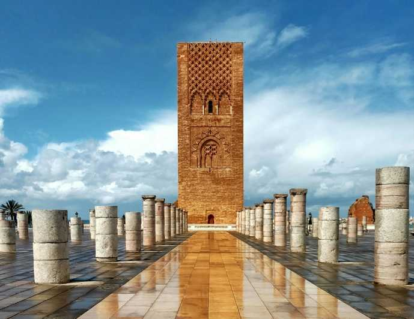
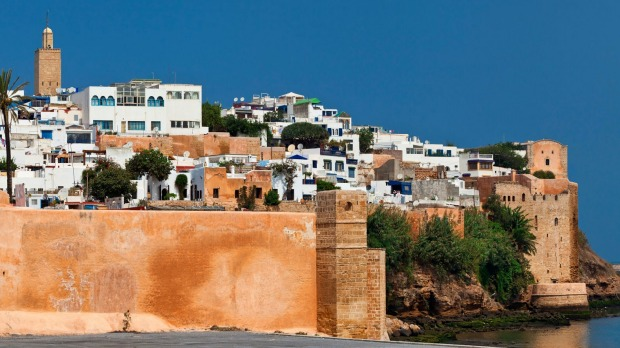
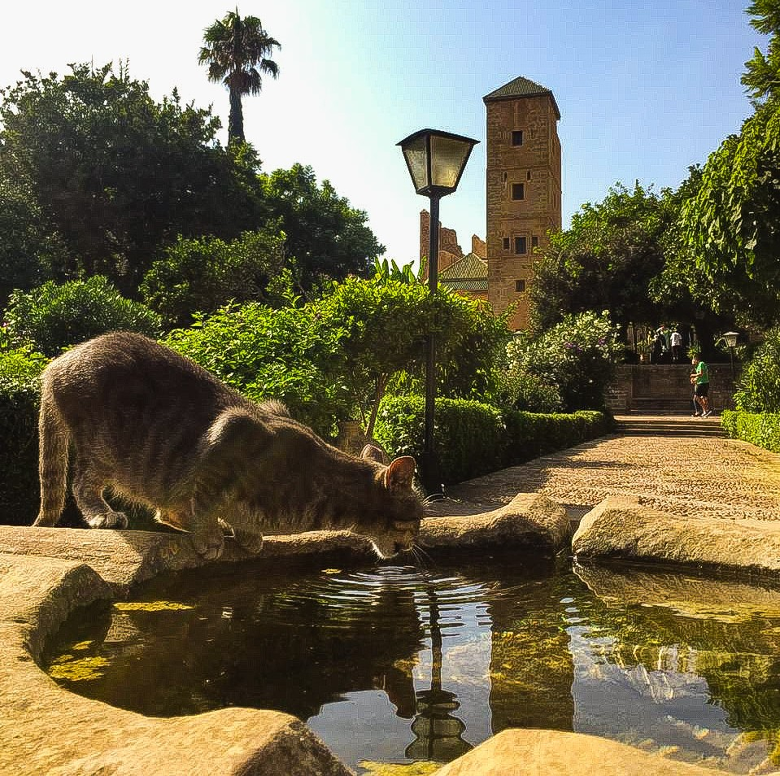
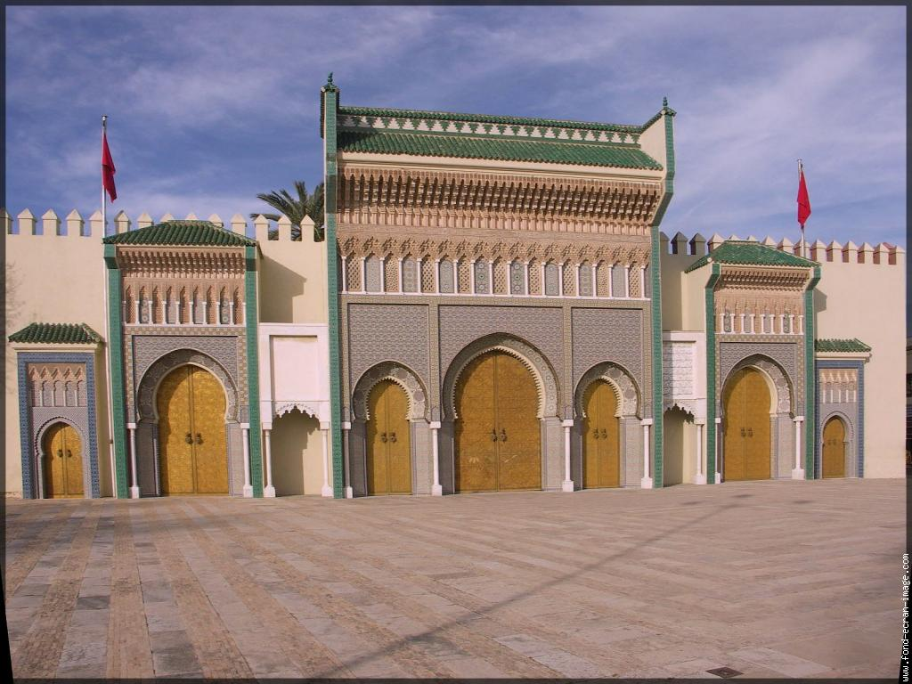
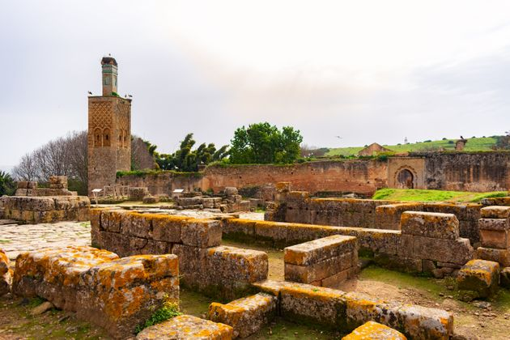

RABAT
|
Rabat est la capital du Maroc .La ville est située au bord de l'Atlantique au nord-ouest du Maroc, à 40 km au sud de Kénitra et 240 km au sud-ouest de Tanger et du détroit de Gibraltar, et à 87 km au nord-est de Casablanca. Elle est séparée de la ville de Salé au niveau de l'embouchure du Bouregreg, d'où leur surnom de « villes jumelles ».Sur le plan administratif, son territoire — à distinguer de celui de l’agglomération rabataise incluant sa banlieue — d'une superficie de 118,5 km27, correspond à celui de la préfecture de Rabat qui, depuis le retour au principe de l'unité de la ville en 20028, est composée d'une part de la commune urbaine de Rabat, divisée en cinq arrondissements ; d'autre part de la commune urbaine de Touarga, où se situe le palais royal, enclavée dans la première. Lors du dernier recensement de 2014, sa population était de 577 827 habitants5, faisant de Rabat la 7e plus grande ville du royaume. Avec sa banlieue, elle forme la deuxième plus grande agglomération du pays après celle de Casablanca9. |
 | |
|  |
La ville a été fondée en 1150 par les Almohades10, qui y édifièrent une citadelle (devenue la kasbah des Oudayas), une mosquée et une résidence. C’était alors ce qu'on appelle un ribat (« forteresse »11). Le nom actuel vient de Ribat Al Fath, « le Camp de la Victoire ». Plus tard, le petit-fils d'Al-Mūmin – Ya'qub al-Mansūr – agrandit et compléta la ville, l'entourant notamment de murailles. Par la suite, elle servit de base aux expéditions almohades en Andalousie.Après 1269, quand les Mérinides choisirent Fès comme capitale, Rabat entra dans une période de déclin. Ainsi, l'explorateur morisque Hassan al-Wazzan a rapporté qu'il n'y subsistait que 100 maisons habitées en 1515. En 1609, à la suite du décret d’expulsion de Philippe III, 13 000 Morisques y trouvèrent refuge, revitalisant ainsi la ville12. Jusqu'au xixe siècle, Rabat est connue sous le nom de Salé-le-Neuf.En 1912, Lyautey fit de Rabat le siège du résident général et la capitale du protectorat français au Maroc13. En 1956, à l’indépendance du Maroc, la ville resta la capitale du pays14.Depuis 2012, un ensemble de sites de Rabat est inscrit sur la liste du patrimoine mondial de l'Unesco. La ville a aussi reçu la deuxième place du classement CNN des « Meilleures destinations touristiques de 2013 »15. |
|
|
À partir de 1610, Rabat reçut une forte population de réfugiés morisques chassés de l'ancienne Al-Andalus par le roi d'Espagne Philippe III, qui s’établirent dans la kasbah et à l'intérieur de l'enceinte almohade25, dans la partie nord-ouest qu'ils délimitèrent et protégèrent par une nouvelle enceinte, la "muraille andalouse". Les descendants de ces Morisques, qui portent souvent des patronymes hispaniques tels que Guédira, Mouline (Molina), Bargach (Vargas), Karrakchou (Carracso/Carrasco), Moreno, Balafrej (Palafres), Ronda, Tamourro (Chamorro), etc., sont toujours considérés comme les Rbatis dits « de souche ».Pendant quelques dizaines d’années, Rabat, alors connue de l’Europe sous le nom de Salé-le-Neuf, fut le siège d'une cité-État, la République du Bouregreg, jusqu’à l’avènement des Alaouites qui s’emparèrent de l’estuaire en 1666. Sa principale activité était la course en mer contre les chrétiens, notamment contre les Espagnols, qui lui procurait la totalité de ses ressources, et la république salétine devint ainsi un des principaux centres de la course barbaresque en Afrique du Nord, en concurrence avec les Ottomans qui dominaient Alger, Tunis et Tripoli. Les corsaires de Salé-le-Neuf s'aventuraient très loin dans l'océan Atlantique, parfois jusqu'en Islande et jusqu'à Terre-Neuve, au large de l'actuel Canada26. |
 | |
|  |
À partir de 1610, Rabat reçut une forte population de réfugiés morisques chassés de l'ancienne Al-Andalus par le roi d'Espagne Philippe III, qui s’établirent dans la kasbah et à l'intérieur de l'enceinte almohade25, dans la partie nord-ouest qu'ils délimitèrent et protégèrent par une nouvelle enceinte, la "muraille andalouse". Les descendants de ces Morisques, qui portent souvent des patronymes hispaniques tels que Guédira, Mouline (Molina), Bargach (Vargas), Karrakchou (Carracso/Carrasco), Moreno, Balafrej (Palafres), Ronda, Tamourro (Chamorro), etc., sont toujours considérés comme les Rbatis dits « de souche ».Pendant quelques dizaines d’années, Rabat, alors connue de l’Europe sous le nom de Salé-le-Neuf, fut le siège d'une cité-État, la République du Bouregreg, jusqu’à l’avènement des Alaouites qui s’emparèrent de l’estuaire en 1666. Sa principale activité était la course en mer contre les chrétiens, notamment contre les Espagnols, qui lui procurait la totalité de ses ressources, et la république salétine devint ainsi un des principaux centres de la course barbaresque en Afrique du Nord, en concurrence avec les Ottomans qui dominaient Alger, Tunis et Tripoli. Les corsaires de Salé-le-Neuf s'aventuraient très loin dans l'océan Atlantique, parfois jusqu'en Islande et jusqu'à Terre-Neuve, au large de l'actuel Canada26.Le sultan Yacoub El Mansour de la dynastie des Almohades projetait de construire la plus grande mosquée du monde musulman, après celle de Samara en Irak. |
|
|
On ignore beaucoup de choses de cette œuvre gigantesque à commencer par son nom dont on ne connaît pas l'origine : nom du lieu, nom d'une tribu ou nom du maître d’œuvre. Pour certains historiens du xviiie siècle, notamment espagnols, l'architecte serait un dénommé Jabir ibn Aflah, latinisé au xvie siècle sous le nom de Guever, Sévillan mort vers l'an 1197 qui aurait conçu à l'identique la Giralda de Séville, la Koutoubia de Marrakech et le minaret de la mosquée Hassan de Rabat. Cette hypothèse n'a jamais été confirmée. Pour la grande majorité des historiens2, l'architecte Ahmad Ben Baso, concepteur de la mosquée Koutoubia et de la Giralda de Séville, sous le même modèle, est aussi l'architecte de la tour Hassan. Une tierce hypothèse plus logique retient la coopération de plusieurs architectes dont les plus éminents sont Ahmad Ben Baso et Jabir Ibn Aflah. La seule certitude historique est la date de début des travaux, 1196, et le nom du commanditaire.Les travaux furent abandonnés après la mort du sultan Yacoub El Mansour, en 1199. Le minaret devait culminer à plus de 60 m, mais n'atteignit que 44,3 m. La mosquée Hassâne ou Hassan fut donc improprement appelée tour Hassan. La colonnade de l'édifice fut endommagée lors du tremblement de terre de Lisbonne de 1755, qui détruisit entièrement le dôme de la tour3.Le site du Chellah fut sans doute la plus ancienne agglomération humaine à l'embouchure du BouRegreg. Les Phéniciens et les Carthaginois, qui ont fondé plusieurs comptoirs au Maroc, ont probablement habité les bords du Bouregreg. |
 | |